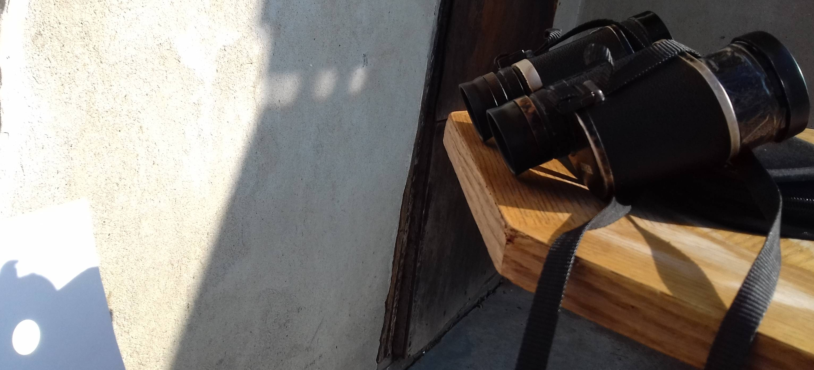

Pracuję w szkołach jako nauczyciel fizyki.
W swoim dorobku mam:
W grudniu 2018 ukończyłem kurs na Testera Manualnego w szkole programowania CodersLab. W jego trakcie nabyłem podstawowe umiejętności testerskie oraz miałem do czynienia z następującymi narzędziami:
Zdobyłem też podstawowy certyfikat ISTQB
Od kwietnia do czerwca 2019 uczestniczyłem w programie Intive Patronage. Zespół złożony z programistów i testerów (byłem jednym z nich) pracował nad projektem, jakim była aplikacja do zarządzania grą miejską.
Podejmowane przeze mnie aktywności to:
W lipcu 2019 dostałem się do programu CodersCamp, gdzie zdobywam szlify w programowaniu webowym. Składa się on z części praktycznej, jaką jest wykonanie jednego projektu indywidualnego i czterech grupowych oraz z części teoretycznej, której celem jest opanowanie poniższych działów:
Czasem przez lornetkę obserwuję Księżyc, Wenus, Marsa i Jowisza. Udało mi się też zarejestrować tranzyt Wenus metodą rzutowania obrazu Słońca na kartkę za pomocą lornetki z odpowiedniej odległości, którą to metodę przedstawia poniższe zdjęcie:
Jeśli o Słońcu mowa, to zawsze warto przypomnieć, że na Słońce nie można patrzeć gołym okiem, ani przez przyrządy optyczne, gdyż można w ten sposób stracić wzrok w ciągu kilku sekund.
Poniżej zdjęcie obrazu Słońca na kartce z przechodzącą Wenus:
Strona o projekcyjnej metodzie obserwacji Słońca
Aparaty fotograficzne w niektórych starych telefonach komórkowych, bez przeróbki, reagują nie tylko na światło widzialne, ale i na podczerwień. Aby to zobaczyć, trzeba na obiektyw nałożyć filtr, który pochłania światło widzialne, a przepuszcza promieniowanie o większej długości fali. Nietrudno o taki materiał. Wystarczy np. kilka warstw kolorowych folii i ciemnych okularów
Jeśli już o ciemnych okularach mowa, to może się pojawić pytanie: czy warto je nosić w słoneczny dzień? Moim zdaniem tak, jeśli się je normalnie użytkuje - chronią przed nadmiarem światła widzialnego i ultrafioletem (zależy to oczywiście od ich jakości).
Ciemne okulary absolutnie nie służą natomiast do patrzenia na Słońce - nawet jeśli użyjemy kilku par jednocześnie (wtedy rozszerzona źrenica wpuści jeszcze więcej podczerwieni)
Poniżej wreszcie przykładowe zdjęcia. Po najechaniu kursorem (lub krótkim dotknięciu w przypadku ekranu dotykowego) pojawi się zdjęcie danego obiektu wykonane przez złożone: dwie folie w kolorach czerwonym i niebieskim oraz nakładkę polaryzacyjną na okulary (która prawdopodobnie nie polaryzuje podczerwieni)Niestety niewykluczone, że obrazy zostały zakłucone światłem, które dostało się między filtry lub między filtry a komórkę.
Poniżej wreszcie przykładowe zdjęcia. Po najechaniu kursorem (lub krótkim dotknięciu w przypadku ekranu dotykowego) pojawi się zdjęcie danego obiektu wykonane przez złożone: dwie folie w kolorach czerwonym i niebieskim oraz nakładkę polaryzacyjną na okulary (która prawdopodobnie nie polaryzuje podczerwieni). Niestety niewykluczone, że obrazy zostały zakłucone światłem, które dostało się między filtry lub między filtry a komórkę.
Strona o fotografii w podczerwieni i nie tylko
Jestem za pełną ochroną życia od poczęcia do naturalnej śmierci. Między innymi popieram działania Fundacji Małych Stópek.
Poniżej filmik ze strony fundacji pokazujący zapis USG z poczętym dzieckiem: